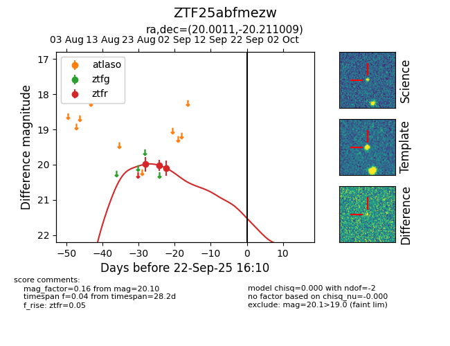
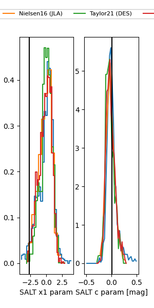

FINK: ZTF25abfmezw
Lasair: ZTF25abfmezw
ALeRCE: ZTF25abfmezw
ZTF25abfmezw (ztf,fink)
equatorial (ra, dec) = (20.0011,-20.21101)
galactic (l, b) = (167.8221,-80.48474)


last ztfr=20.10
3 ztfr detections